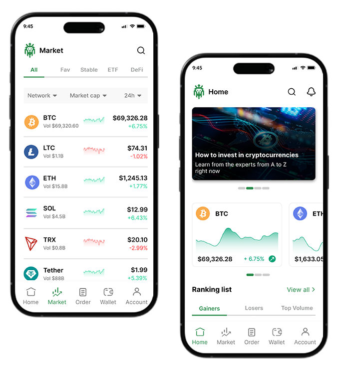
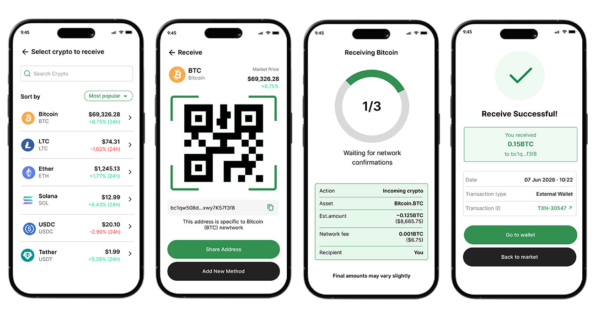
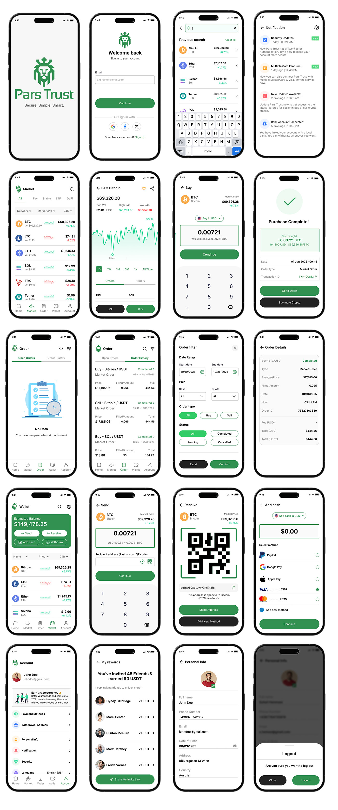

Pars Trust
Mobile Crypto Trading App
Timeline
Aug - Oct 2024
Tools
Figma, Figjam
Role
UI-UX Designer, Design System, Usability Testing

Project overview
Pars Trust needed a mobile crypto trading app that could compete in a crowded market — not by adding more features, but by doing less, better. My role as UI/UX designer was to design an experience that feels fast and trustworthy: one where users can check their portfolio, read the market, and act, without friction getting in the way. The result is a clean, mobile-first trading experience built around three core actions — buy, sell, and transfer — with a visual system calm enough for a high-stakes financial context and clear enough to read at a glance.
Problem
Most crypto trading apps try to cram in too many features and copy desktop trading screens onto small phone screens. This makes them cluttered and confusing, especially during a fast-moving market. Pars Trust needed to stand out not by adding more features, but by making trading feel fast, simple, and safe. The goal was to design a smooth mobile trading experience that shows the important information clearly — while protecting users from costly mistakes.
Research & User Behavior
Instead of typical user personas, the research focused on how people behave and think when money and risk are involved.
Key findings:
- Panic tapping: If the app takes more than 200 milliseconds to respond, users get nervous and tap the button again — sometimes placing the same order twice.
- Hard-to-use charts: Charts designed for a mouse (pinch to zoom) don't work well with fingers on a phone.
- Too many colors confuse users: Using the brand color (green) for buttons and profit indicators makes it hard to tell navigation from actual market data.
Layout & Interaction Design
Redesigned the app to be easy to use with one hand:
- Quick-access buttons: Moved key actions (Buy, Sell, Transfer) into a bottom panel that's easy to reach with your thumb, so users don't have to jump between screens during a trade.
- Touch-friendly charts: Changed how charts work — instead of pinch-to-zoom, users now scrub with one finger and feel a slight vibration for feedback. This lets them check prices without covering the chart with their thumb.
- Clear color rules: Green (#27C687) and red (#FF4D4D) are now used only to show if prices are going up or down. Everything else uses neutral colors, so the screen feels calm even when the market isn't.
Security and Transaction Safety
During testing, we found a serious issue in the wallet transfer process: after entering a PIN, there was a delay before the app confirmed the transfer went through. Because users got no feedback, 80% of them tapped the button again, which could cause the same transaction to go through twice.
How we fixed it:
- Clear step-by-step states: The new receiving process clearly displays the different steps: selecting the crypto (Receive) → displaying the QR code and address (Receive qrcode) → processing and waiting for network confirmations (Receiving detection) → successful completion (Congratulation send).
- Instant feedback and step by step states: By using visual progress indicators (such as the 1/3 circular progress chart) and transaction details (action type, network fee, and estimated amount), the user knows at every moment that their request is being handled, eliminating the need to repeat the action or tap the button again.

Prototype
I moved from paper sketches to digital wireframes to simulate and refine the real-world application experience, ensuring user need for speed and clarity remained at the forefront.
Low-Fidelity Wireframes:
I began with paper sketches and low-fi digital wireframes to establish layout priorities. To address user pain points, the onboarding process was streamlined to prevent early drop-offs, the navigation bar was locked to the bottom for thumb-accessibility, and asset cards were structured to surface key performance data (like 24h percentage changes) instantly without needing to drill down.

Interactive Prototype:
I built a high-fidelity interactive prototype to test core user navigation streams, specifically focusing on the transaction and wallet management flows. This phase introduced vital functional elements, such as a real-time price tracking chart with touch-optimized time selectors, a unified bottom action bar for instant access to buy/sell/transfer functions, a mandatory PIN-based security verification to ensure transaction trust, and system feedback screens (e.g., "Purchase Complete") to confirm actions gracefully and build long-term user confidence.

Usability Testing & Outcomes
- Tested the app with 5 real investors, focusing on stressful situations like selling assets quickly during a market drop or completing a payout with a weak internet connection.
- Identified and resolved the primary breakdown in the Wallet Send flow: no processing feedback between PIN verification and transaction completion.
- Found that 80% of users (4 of 5 participants) tapped the confirm button more than once before the fix.
- Implemented a fix by locking the button after the first tap, adding a progress indicator, and introducing a transitional loading state to prevent duplicate taps and reinforce trust during high-stakes financial actions.
- Achieved a drop in duplicate transactions to 0% after the fix—reducing both user stress and support requests, with follow-up checks confirming no repeated taps.
- Validated that the simplified Home and Market screens successfully supported fast, confident, at-a-glance decisions, as intended.